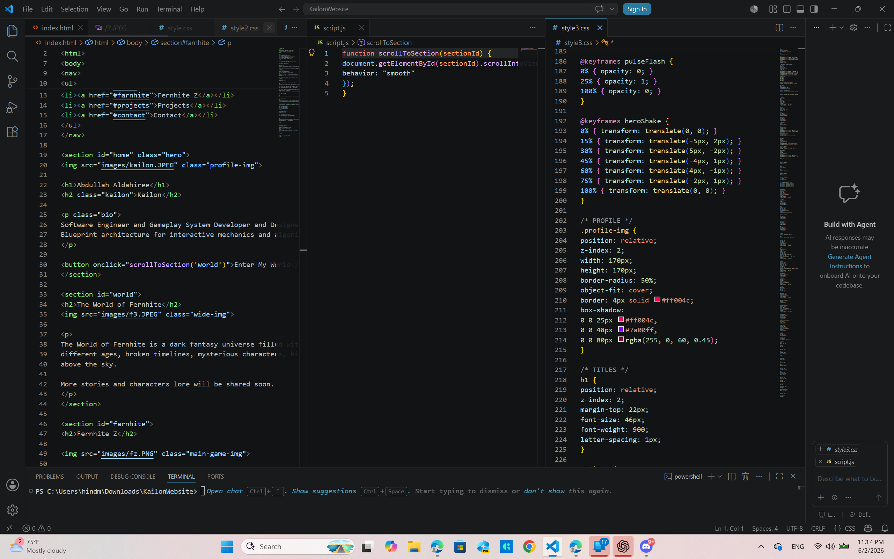

Abdullah Aldahiree
Kailon
Software Engineer and Gameplay System Developer and Designer. Blueprint architecture for interactive mechanics and algorithms.
Software Engineer and Gameplay System Developer and Designer. Blueprint architecture for interactive mechanics and algorithms.

The World of Fernhite is a dark fantasy universe filled with ruined lands, different ages, broken timelines, mysterious characters, hidden lore, and a castle above the sky. More stories and characters lore will be shared soon.

Fernhite Z is a cinematic Unreal Engine adventure set beneath a blood-red moon in a fractured world consumed by mystery and chaos. The game takes place 2.4 million years before the main events of Fernhite saga. Zigi and his loyal dog, Ziad, begin a dangerous journey driven by ambition, destiny, and the beliefs that define who they are. As they travel through forgotten lands, face impossible choices, and uncover the truth behind the legendary Farnhite, every step pushes them closer to the edge of the timeline. As the influence of Farnhite spreads through Zigi mind, reality itself begins to bend. Sunrises arrive too soon, nights seem to last forever, and the line between past, present, and future slowly fades. The world drifts into a dreamlike state where time no longer follows its natural path. But how much can a man sacrifice in pursuit of his beliefs? Will Zigi had enough!
More information and teasers about the game will be shared soon.
Abdullah Aldahiree — Lead Developer, Gameplay Programmer & Story Writer
Mohammed Hasan — Creative Director
Ali Aldahiree — World Setting Director
Additional Team Members — More contributors will be announced as development progresses.


GreenMoon should not remember the world that came before this one — but she does. At first, the memories arrive in pieces: a place she has never visited, a face that somehow feels familiar, a moment that could not have happened in the life she knows now. She tries to brush them off as dreams, until the moonlight appears again and another piece of that lost world comes rushing back.
The more she remembers, the stranger everything around her begins to feel. Everyone else lives as if this is the only world that has ever existed, while GreenMoon is left chasing memories no one believes are real. What starts as a search for answers slowly turns into something much more personal — a chance to understand who she used to be, decide who she wants to become, and discover whether a second life can truly be her own. And buried somewhere inside those memories is one name that refuses to disappear: Fernhite.
LunaViridis is the playable world my team and I are building for GreenMoon in Unreal Engine 5. I am serving as the team lead, helping guide the project while also working directly on the gameplay and world systems. I started the environment from real-world elevation data, shaped the terrain with QGIS and Gaea, and brought it into Unreal to turn it into a playable world. From there, I have been developing gameplay with C++ and Blueprints, building dynamic weather and interactions, refining the environment, and optimizing performance as the project grows.
Full Showcase


Software engineering projects, algorithms, data structures, Unreal Engine systems, gameplay mechanics, and future game development work will be showcased here.
Designed and developed by Abdullah Aldahiree. A custom portfolio website built with HTML, CSS, and JavaScript, featuring responsive design, interactive navigation, animated visual effects. The website serves as a central hub for my projects, game development, and portfolio content.

Email: aaldahiree@gmail.com
Cell Phone: 281-409-4011
GitHub: Aldahireee